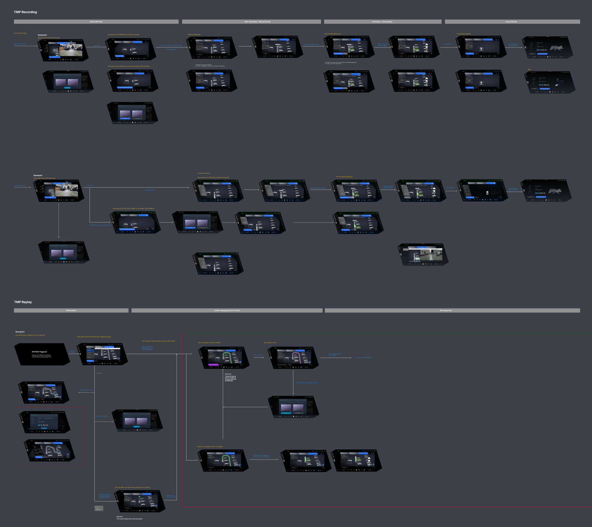

This project focused on defining the user experience strategy for BMW’s next-generation Auto Valet Parking (AVP) suite on the iDrive X platform, covering three core features: Trained Map Parking (TMP), External Map Parking (EMP), and Automatic Maneuvering Assistant (AMA). Through cross-functional collaboration with HMI, usability, and engineering teams, we conducted expert test drives, competitive benchmarking, and scenario-driven flow modeling to uncover key user needs and system constraints across L2 and L4 automation levels. The outcome was a set of actionable UX principles and adaptive user journeys that ensure trust, safety, transparency, and effortless control in real-world AVP usage.

Role
UX Designer, Researcher
institution
BMW Group
year
2024-2025
Platform
BMW iDriveX, BMW Panoramic Drive
KEY WORDS
Auto Valet Parking, Autonomous Driving, UX Design
Deliverables
UX Concept & Prototype, Benchmark Report
research
Expert Test-drive & Benchmark Research
Before concept development, (me acting as the organizer of the study), we conducted a structured expert evaluation (N=15) by organizing multi-role test-driving sessions across leading Chinese OEM vehicles to benchmark Assisted Driving (L2/L2+) and Auto Valet Parking (AVP) features. Each expert group assessed in-vehicle HMI and system behavior through assisted driving tasks and standardized review protocols. Post-test debriefs and feedback synthesis informed our design direction for BMW’s AVP suite.

Technology clarification
BMW Automated Valet Parking Suite Glossary
This design exploration was initiated by thoroughly understanding the advanced Auto Valet Parking (AVP) technologies featured in BMW’s innovative iDrive X platform. Collaborating closely with product technologists through a series of in-depth workshops, we pinpointed three core features—TMP, EMP, and AMA—to serve as focal points. Our initial objective centered on clearly distinguishing these features and defining their ideal application scenarios. Through mapping user journeys and technical contexts, we highlighted meaningful differences that align each technology to specific parking environments, setting the foundation for a seamless, intuitive automotive experience.
Technology Decoded

*† SAE J3016 classification: L2 = Partial Automation (driver supervision required); L4 = High Automation within a Limited Operational Design Domain (driver may hand off and leave).
design FOCUS
HMI Design Principles for BMW Auto Valet Parking (AVP)
To design AVP experiences that prioritize safety, trust, and effortless control on BMW iDrive X and Panoramic Display, we led a cross-functional World Café with global UX teams, product owners, and engineers. Together, we defined core principles to guide the feature hierarchy, information architecture, and interaction entry points. Special attention was given to the needs of CN users, who expect intelligent systems that go beyond usability to provide clear, proactive guidance throughout the AVP journey.

Decision Flow of AVP Feature Selection and Execution
This flowchart visualizes the end-to-end user flow for BMW’s Automated Valet Parking (AVP) suite across three key features: External Map Parking (EMP), Trained Map Parking (TMP), and Automatic Maneuvering Assistant (AMA). The system dynamically determines which AVP mode to offer based on parking environment and data availability, guiding the user through feature selection, first-time setup, and automation level (L2/L4) execution. The logic ensures a context-aware, safe, and effortless experience—from proactive offering to autonomous parking completion, adapting intelligently to both public and private scenarios.

user journey
Trained Map Parking
The user journey of AVP (Trained Map Parking) consists of two key phases: Recording and Replaying. In the record phase, users manually drive to a parking spot to scan and save the route for future use, with the system guiding setup based on whether it’s a first-time or resumed recording.
In the replay phase, users can activate AVP to autonomously park—either while staying in the vehicle (L2) or remotely via mobile (L4)—with the system adapting intelligently to context, such as spot availability, entry position, and automation level.
Recording

Zoom to view details
Replaying

Zoom to view details
